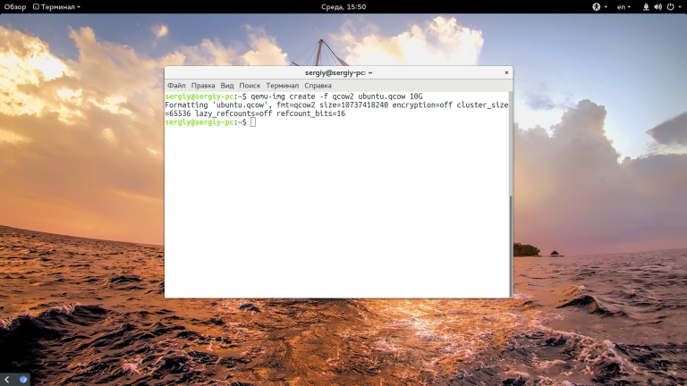
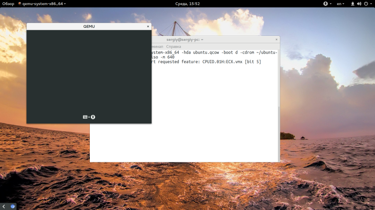
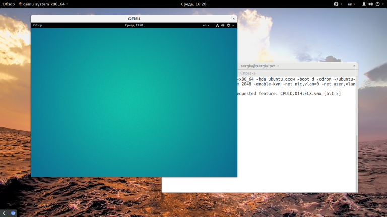
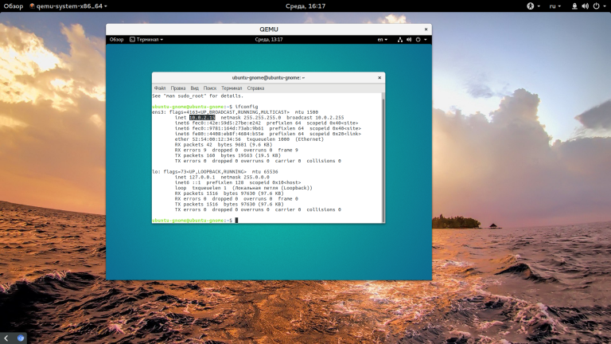
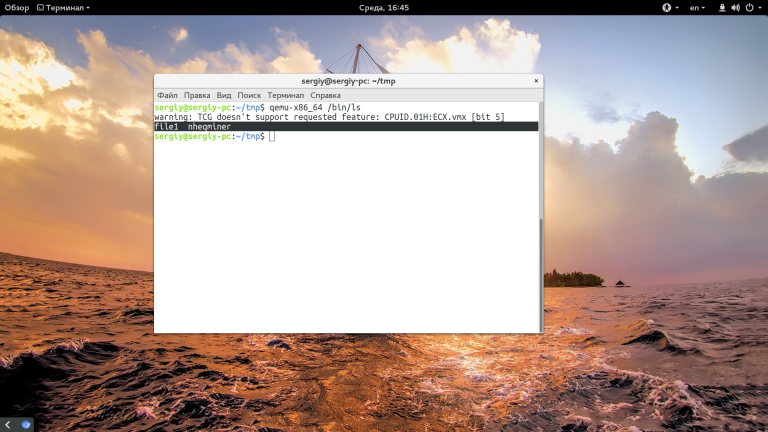

Преимущество виртуализации в том, что она позволяет запустить на одном компьютере несколько разных операционных систем на одном компьютере одновременно и при этом неважно какой они будут архитектуры. Среди домашних пользователей достаточно часто используются такие программы для эмуляции компьютера, как Virtualbox и VMware, это мощные программы с графическим интерфейсом и множеством возможностей, которые очень просто настроить.
Содержание статьи:
Что такое qemu?
Установка qemu
Как пользоваться qemu?
1. Использование qemu-system
2. Использование эмуляции окружения
Выводы
ЧТО ТАКОЕ QEMU?
Qemu - это бесплатный инструмент с открытым исходным кодом для эмуляции и виртуализации работы операционных систем на компьютере. Программа может работать в Windows, Linux, MacOS и даже на Android. Ресурсы хоста, такие как процессор, жесткий диск, память, разделяются между виртуальными машинами.
Qemu использует аппаратную виртуализацию, поэтому может выполнять гостевые операционные системы почти так же быстро, как и на основном железе. Может использоваться гипервизор XEN или модуль ядра KVM в Linux. Qemu может работать в двух режимах работы:
Полная эмуляция системы - в этом режиме qemu полностью эмулирует устройство, например, компьютер, включая все его компоненты, процессор и различные периферийные устройства. Он может использоваться для запуска нескольких операционных систем без перезагрузки или отладки системного кода.
Эмуляция пользовательского режима - работает только для Linux хоста, позволяет запускать процессы Linux, скомпилированные для одной архитектуры в другой, например, ARM программы в x86. Полезно для разработки, кросс-компиляции и отладки.
Эмулировать можно такие архитектуры: x86 (32 и 64 бит), PowerPC (32 и 64 бит), ARM, MIPS (32 бит), Sprac (32 и 64 бит), Alpha, ColdFire(m68k), CRISv2 и MicroBlaze. Этот список уже более внушительный чем у Virtualbox.
УСТАНОВКА QEMU
Перед тем как мы сможем использовать программу, необходимо ее установить. Если вы используете дистрибутив Linux, например, Ubuntu, то сможете найти программу в официальных репозиториях. Для Ubuntu команда будет выглядеть вот так:
sudo apt install qemu-kvm qemu
Для Fedora и других систем RedHat можно установить группу Virtualization:
sudo dnf install @virtualization
В ArchLinux используйте Pacman:
pacman -S qemu
Для Windows или MacOS вам нужно скачать исполняемый файл из официального сайта. Программа управляется только через терминал, так что вы главном меню системы ничего не появиться после установки. А теперь перейдем к тому как настроить qemu.
КАК ПОЛЬЗОВАТЬСЯ QEMU?
Теперь, когда программа установлена и готова к использованию попытаемся разобраться как ее запустить и применять. Но сначала нужно разобраться какие команды и для чего используются. Эмулятор qemu создает много команд, но их можно разделить на группы:
qemu-архитектура - эмуляция окружения пользователя для указанной архитектуры;
qemu-system-архитектура - эмуляция полной системы для архитектуры;
qemu-img - утилита для работы с дисками;
qemu-io - утилита для работы с вводом/выводом на диск;
qemu-user - оболочка для qemu-архитектура, позволяет запускать программы других архитектур в этой системе;
qemu-system - оболочка для qemu-system-архитектура, позволяет полностью эмулировать систему нужной архитектуры.
Сначала разберемся с эмуляцией полной системы, поскольку для решения этой задачи виртуальная машина qemu используется чаще всего, а уже потом перейдем к режиму пользователя.
1. ИСПОЛЬЗОВАНИЕ QEMU-SYSTEM
Чтобы вы понимали что и откуда берется для начала рассмотрим опции утилиты qemu-system. Синтаксис команды такой:
$ qemu-system параметры
Куда сложнее здесь синтаксис каждого из параметров:
-имя_параметра имя_опции=значение:значение2
Мы рассмотрим только основные параметры, и их опции, которые нам понадобятся:
-machine указывает тип компьютера, который вы собрались эмулировать, можно выбрать ubuntu, pc, pc-q35 и другие варианты, смотрите подробнее командой -machine help;
-cpu - тип процессора, можно передать непосредственно тип процессора, а также дополнительные флаги;
-smp - включает симуляцию мультипроцессорной архитектуры;
-boot - позволяет настроить порядок загрузки устройств, a,b - дискета, с - первый жесткий диск, d - CDROM, n-p - загрузка через сеть, по умолчанию виртуальная машина загружается из жесткого диска;
-m - указывает количество оперативной памяти, доступной машине;
-k - раскладка клавиатуры по умолчанию;
-soundhw - подключить звуковую карту к системе;
-device - подключить указанное устройство к машине, нужно указать драйвер и его опции;
-name - имя гостевой системы, будет отображаться в верху окна;
-uuid - установить UUID для системы;
-fda, fdb - подключить дискету из файла;
-hda, hdb - подключить жесткий диск из файла;
-cdrom - подключить оптический диск;
-usb - включить поддержку USB;
-usbdevice - подключить USB устройство;
-display - выбрать тип отображения, доступно sdl, curses, gtk, none, vga и другие;
-full-screen - запустить в полный экран;
-no-acpi - отключить поддержку ACPI;
-net - создать сетевой интерфейс;
-realtime включить режим реального времени, опции mclock нужно передать значение on;
-gdb - ожидать подключения отладчика gdb;
-enable-kvm - включить поддержку kvm;
-loadvm - загрузить сохраненное состояние;
-daemonize - сделать процесс фоновым;
-snapshot - записывать изменения не в файл жесткого диска, а в отдельные файлы;
-nographic - отключить графический вывод.
-kernel - использовать указанный образ ядра linux.
-append - командная строка для ядра;
-initrd - файл initrd для загрузки Linux.
Мы рассмотрели опции для qemu-system-x86-64, для других архитектур, они могут немного отличаться. А теперь разберем несколько простых примеров как использовать qemu, как создать машину qemu и настроить ее.
Сначала нужно создать жесткий диск для установки. Вы можете использовать реальные жесткие диски, но работать с образами намного удобнее. Можно просто создать пустой файл, заполненный нулями, а затем форматировать его в нужную файловую систему во время установки, но также можно создать файл формата qcow2, этот формат используется по умолчанию в qemu. Воспользуемся командой qemu-img:
$ qemu-img create -f qcow2 ubuntu.qcow 10G

Опция -f указывает формат нового файла. Теперь мы можем непосредственно перейти к запуску qemu-system. Вот так будет выглядеть самая простая команда запуска системы:
$ qemu-system-x86_64 -hda ubuntu.qcow -boot d -cdrom ~/downloads/ubuntu-17.04-server-amd64.iso -m 640

Здесь мы подключаем наш жесткий диск как hda, затем указываем что нужно загружаться с cdrom и подключаем образ системы ubuntu к нему. Последний параметр указывает сколько оперативной памяти будет выделено для машины.
Дальше откроется окно, похожее на VritualBox и начнется установка системы. После того как установка будет завершена, вы сможете запускать машину командой:
$ qemu-system-x86_64 -hda ubuntu.img -m 640
Создавать виртуальную машину с другой архитектурой не очень сложно, достаточно изменить команду. Например, сделаем виртуальную машину ppc:
$ qemu-system-ppc -hda ubuntu.qcow -boot d -cdrom ~/downloads/ubuntu-17.04-server-amd64.iso -m 640
Поскольку сейчас мы не используем kvm, то система будет работать очень медленно все можно очень сильно ускорить, если его включить с помощью опции -enable-kvm:
$ qemu-system-x86_64 -hda ubuntu.qcow -m 640 -enable-kvm
По умолчанию в гостевой системе не будет звука, но вы можете подключить туда звуковую карту:
$ qemu-system-x86_64 -hda ubuntu.qcow -m 640 -enable-kvm -soundhw ac97
Не всегда мы запускаем машину только в качестве сервера, иногда нужно запустить обычную десктопуную систему, в таком случае нам придется настроить виртуальную видеокарту, потому что того, что идет по умолчанию хватит только на консоль. Для этого используется опция -vga:
$ qemu-system-x86_64 -hda ubuntu.qcow -m 640 -enable-kvm -soundhw ac97 -vga qxl

С помощью опции -global qxl-vga.vram_size можно задать объем видеопамяти, доступный машине, значение указывается в байтах, например:
$ qemu-system-x86_64 -hda ubuntu.qcow -m 640 -enable-kvm -soundhw ac97 -vga qxl -global qxl-vga.vram_size=4294967
Для многих машин важно чтобы из них был доступ в сеть интернет. Настройка сети qemu - это достаточно обширная тема, которую мы не будем полностью раскрывать в этой статье. Если кратко, то, в qemu используется специальный виртуальный шлюз vlan, который позволяет соединять машины с внешней сетью или между собой. Каждый vlan имеет свой номер. Самый простой способ настроить сеть - использовать такие параметры:
$ qemu-system-x86_64 -hda ubuntu.qcow -m 640 -enable-kvm -net nic,vlan=0 -net user,vlan=0

Здесь мы два раза вызываем опцию -net, в первый раз создаем виртуальную сетевую карту с помощью параметра -nic и подключаем ее к vlan с номером 0. Вторая же опция -net создает наш vlan 0 с типом конфигурации user, которая не требует дополнительной настройки и автоматически подключается к сети хоста.
2. ИСПОЛЬЗОВАНИЕ ЭМУЛЯЦИИ ОКРУЖЕНИЯ
Теперь рассмотрим использование qemu для эмуляции архитектуры в окружении пользователя. Команда qemu-user или qemu-архитектура позволяет выполнять программы, собранные для другой архитектуры прямо в вашей системе. Это очень часто используется для отладки программ, собранных для arm на компьютере или других подобных задач. Команде достаточно передать команду и ее параметры:
$ qemu-x86_64 /bin/ls

Точно так же вы можете выполнить arm программу или программу для любой из поддерживаемых архитектур.
ВЫВОДЫ
В этой статье мы очень кратко рассмотрели как пользоваться qemu, основные настройки этой утилиты и опции. На самом деле там намного больше опций и возможностей. Одна только возможность эмулировать такое огромное количество архитектур чего стоит. Если для вас эмулятор qemu слишком сложен через терминал, то можно использовать графический интерфейс, например, virt-manager. А вы используете qemu? Или предпочитаете другие виртуальные машины? Почему? Напишите в комментариях!